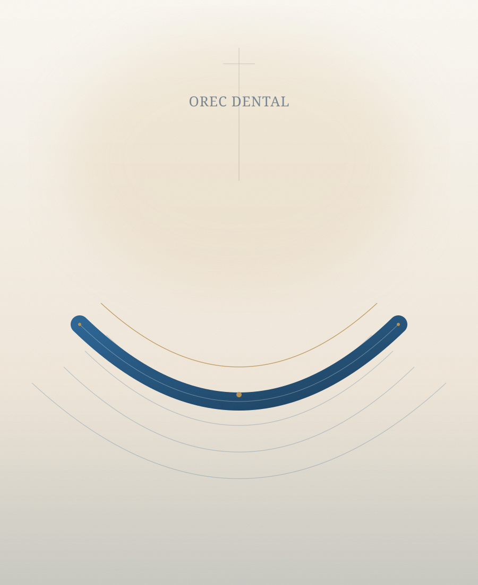
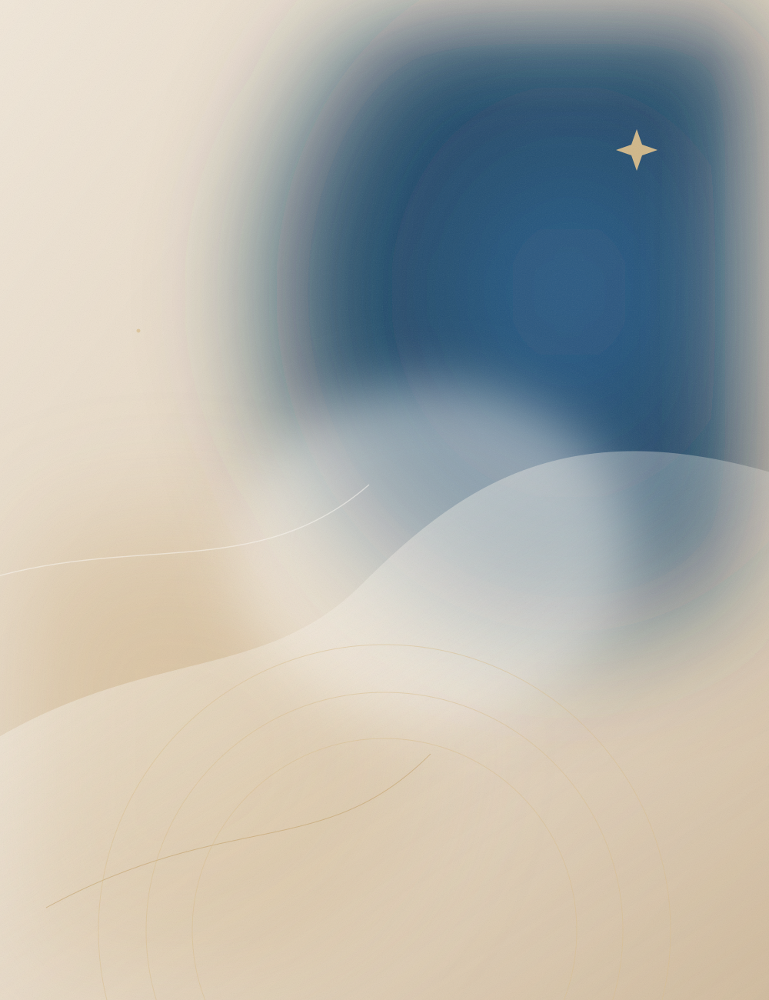

OREC CLINIC · ISTANBUL
Since 2015
جمالٌ يبدأ من الثقة.
Quiet confidence. Modern care.في عيادة أوريك لا نعيد رسم الملامح، بل نكشف عن أفضل نسخة منها. أربعة تخصصات، ورعاية تبدأ بالاستماع إليك، وتنتهي بخطة تشبهك — لا تشبه غيرك.
رعاية تُبنى على الاستماع، التخطيط، والمتابعة.

2015
بداية الرحلة في قلب إسطنبول
Est. Istanbul
01
تجميل ومعالجة الأسنانDental & Aesthetic Dentistry
02
الجراحات التجميليةCosmetic Surgery
03
زراعة الشعرHair Transplant
04
جراحات السمنةBariatric Surgery

2015
تأسست في إسطنبول
OUR STORY
عيادة تشبه البيت،
اقرأ قصة العيادة
عيادة تشبه البيت،
ورعاية تشبه الاهتمام.
منذ أن فتحت عيادة أوريك أبوابها في قلب إسطنبول عام 2015، كان القرار الأول أن نكون السند والمستشار الأمين لكل من يبحث عن تغيير إيجابي — لا مجرد عيادة تقدم إجراءات.
نجمع بين دقة الطب الحديث ودفء الرعاية العائلية، ونؤمن أن الجمال الحقيقي هو ما يبرز ملامحك الطبيعية بدلاً من أن يمحوها. ولهذا نبدأ كل رحلة بالاستماع، ثم التشخيص، ثم خطة واضحة تعرف فيها ما يمكن تحقيقه وما لا يمكن.
فريق أوريك الطبيرعاية تبدأ بالاستماع
04تخصصات متكاملة
33خدمة طبية وتجميلية
2015بداية الرحلة
SPECIALTIES
أربعة عوالم،
أربعة عوالم،
ورؤية واحدة للجمال.
لا نؤمن بالحل الواحد للجميع. لكل تخصص لغته وتقنياته، ولكل حالة تفاصيلها التي تستحق خطة مستقلة.
جميع الخدمات


SIGNATURE DEPARTMENT
الأسنان… حيث تبدأ الابتسامة.
أفردنا في أوريك قسماً متكاملاً لطب الأسنان، يجمع بين التخطيط الرقمي ودفء التجربة. من الزراعة والترميم إلى ابتسامة هوليوود والتبييض، كل خطوة تبدأ بصحة الفم قبل جمال النتيجة.
- 01زراعة الأسنانتخطيط رقمي وتقنيات زراعة دقيقة.
- 02ابتسامة هوليوودقشور خزفية تُصمَّم لتناسب ملامحك.
- 03علاج وترميم الأسنانصحة الفم أولاً، ثم النتيجة الجمالية.
- 04تبييض الأسنانحل غير جراحي لابتسامة أكثر إشراقاً.
نجاحنا لا يُقاس بعدد الإجراءات، بل بالراحة التي تلمسها من أول لقاء.
Our promise
WHY OREC
لأن الثقة تُبنى بالتفاصيل.
نعرف أن القرار الطبي ليس سهلاً. ولهذا نمنحك وقتاً للأسئلة، ونشرح البدائل والحدود والمخاطر بوضوح، ونبقى معك بعد العلاج لا قبله فقط.
01
تعامل إنساني
نستمع للمخاوف والتطلعات، ونتعامل مع كل مريض كفرد من العائلة.
02
تقنيات دقيقة
تخطيط رقمي وأدوات حديثة، مع تركيز على الأمان والنتيجة الطبيعية.
03
خصوصية واحترام
مساحة آمنة للحديث، وسرية كاملة في كل ما يتعلق بحالتك.
04
متابعة مستمرة
لا تنتهي علاقتنا بانتهاء العلاج، بل تستمر للاطمئنان على النتيجة.
THE JOURNEY
أربع خطوات،
أربع خطوات،
بوتيرة تشبهك.
من أول سؤال إلى آخر متابعة، تعرف في كل مرحلة أين أنت وما الخطوة التالية.
01
الاستماع والاستشارة
نبدأ بفهم ما يشغلك وتاريخك الطبي وتوقعاتك، قبل أي اقتراح علاجي.
02
التشخيص والخطة
فحص دقيق، وشرح للبدائل والحدود والمخاطر، ثم خطة مكتوبة وواضحة.
03
العلاج والعناية
تنفيذ الخطة في بيئة طبية آمنة، مع متابعة قريبة في فترة التعافي.
04
المتابعة والاطمئنان
مواعيد متابعة ووسيلة تواصل للأسئلة، حتى بعد العودة إلى بلدك.
الخطوة الأولى لا تلتزم بشيء — مجرد محادثة.
ابدأ المحادثة
YOUR NEXT STEP
لنبدأ بـسؤال.
أخبرنا بما تفكر فيه، وسنساعدك على فهم الخيارات المتاحة قبل أي قرار. لا ضغط، ولا وعود غير واقعية — فقط مساحة للأسئلة.
متاحون 24/7 Available 24/7
قنوات التواصل والاستفسارات متاحة على مدار الساعة — واتساب · info@dr-orecclinic.com.

01OREC
CARE
CARE